📚 Support Items / Đồ Hỗ trợ
Đây là lớp item ít được chú ý nhất trong game, do thông thường thì hỗ trợ cũng không có quá nhiều món đồ, nên thường không có nhiều người phân tích các món này.
Ở VN thì lại càng không có :), và những người chơi hỗ trợ là những người lên sai đồ thường xuyên nhất, do không biết các món đồ có công dụng gì. Trang này sẽ phân tích kỹ càng từng món đồ hỗ trợ, để giúp các bạn hiểu rõ hơn về công dụng của từng món.
Mục đích của trang này không phải để chỉ người đọc build nào đúng/sai, mà là để gợi cho mọi người suy nghĩ về 2 điều sau:
- Critical thinking - Tư duy phản biện: Mình không viết cái này để thay thế OPGG/blitz.gg/Mobalytics... Mình viết để khiến các bạn SUY NGHĨ. Suy nghĩ xem nó viết đúng hay sai, trong tình huống nào thì áp dụng được, còn tình huống nào thì phải làm khác đi.
- Intent - Ý định: Tất cả các build trong đây được xây dựng từ bản chất của tướng và cách vận hành tướng trong game, theo ý kiến chủ quan của mình. Tất nhiên, ý kiến của mình có thể đúng/sai, nhưng điều mình nhấn mạnh ở đây là ý định, thứ mình giải thích rất rõ trong từng build.
Không chỉ riêng việc chọn ngọc, mua đồ, tất cả hành động của mỗi người trong game (và ngoài đời :D) đều phải có nguyên nhân, kế hoạch đi kèm.
Người đọc có thể không đồng ý với tất cả mọi thứ được viết trong trang này. Tuy vậy, mình tin là ai đọc xong cũng sẽ học được 1 điều gì đó mới <3
Trở về trang chính
Một số thuật ngữ tiếng Anh:
MS (Movement speed): tốc độ di chuyển
Enchanter: ở VN hay gọi là hỗ trợ buff
Mythic items / Đồ thần thoại
Bùa Nguyệt thạch 13.12

Sau 13.10, item này từ một trong những món mạnh nhất thành một trong những món yếu nhất. Nếu bạn không chơi Soraka hoặc Sona, tốt nhất là hãy nghĩ đến các món khác.
Vương miện Shurelya 13.12
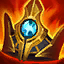
Shurelya đơn giản chỉ cung cấp tốc độ chạy, không gì thêm. Hãy thực sự suy nghĩ cẩn thận trước khi lên món này.
Ví dụ, nếu Wukong team mình cần phải với tới Syndra đối phương, hoặc bạn cần giúp Aphelios thả diều khi đối đầu với Udyr và Ahri, thì Shurelya sẽ là lựa chọn khá tốt. Nếu Vi của đối phương chiêu cuối vào AD bạn, hoặc khi Kalista đối đầu Draven, tốc độ chạy không có tác dụng gì cả. Trong những trường hợp này, bạn cần các chỉ số tấn công/phòng thủ để tank sát thương của đối phương và đánh trả.
Đương nhiên, những ví dụ này quá đơn giản, và chúng ta cần suy nghĩ rộng ra cho cả 10 tướng có mặt trong game.
Hãy dùng não và tư duy trong từng game.
Vọng âm Helia 13.12
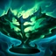
Ở phiên bản 13.10, đây là một trong những món thần thoại mạnh nhất game. Tuy nhiên, Helia chịu 1 đợt nerf ở phiên bản 13.11.
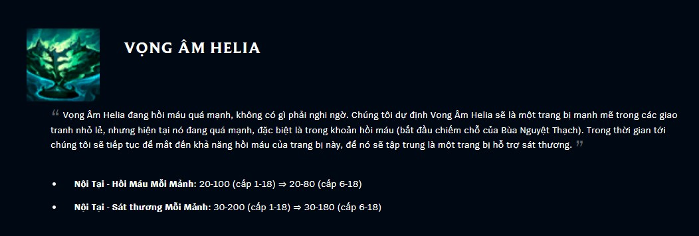
Thoạt nhìn thì có vẻ cũng không phải là nerf lớn lắm đúng không. Đây là do cách viết của Riot chỉ thể hiện chỉ số đầu và cuối. Cách tốt nhất để nhìn thấy rõ ảnh hưởng của thay đổi này là so sánh sát thương và heal theo từng level.
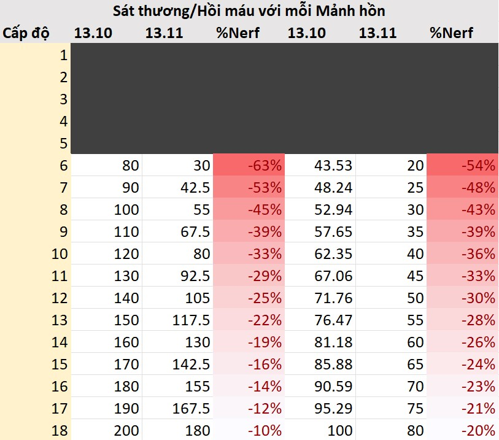
Hình trên có lẽ đã thể hiện rõ nét thay đổi này hơn. Thay đổi chỉ thực sự bớt ảnh hưởng hơn từ khoảng cấp 15, nhưng hỗ trợ thì không được ưu tiên lên cấp.
13.12 tiếp tục nerf Helia khi đã xóa bỏ tương tác giữa item này và Suối nguồn sinh mẹnh.
Nói như thế không có nghĩa là không bao giờ mua Vọng âm Helia. Tuy nhiên, bạn cần phải thực sự chắc chắn rằng mình có thể tấn công đối phương, dù bằng kỹ năng hay đòn đánh thường, để kích hoạt được nội tại của item này.
Giáp vai Nguyệt thần 13.12
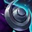
Phát huy tác dụng tốt khi gặp các tướng chống chịu, hồi phục nhiều. Tăng 10% dmg có lẽ không phải là con số quá hấp dẫn, nhưng khi Alistar lao vào combo W-Q, hoặc Thresh/Nautilus kéo trúng, hoặc Leona ulti trúng và all in, thứ mà các vị tướng này mong đợi là team mình có thể dứt điểm được mục tiêu, trước khi chúng hết thời gian CC và tốc biến thoát đi.
Giáp vai Nguyệt thần sẽ không đóng góp quá nhiều cho DPS của cả team, nhưng trong các tình huống burst, item này sẽ cung cấp thêm 1 lượng sát thương không nhỏ để kết liễu đối phương dễ dàng hơn.
Không chỉ như vậy, Giáp vai Nguyệt thần còn đủ sức thay thế cả các món thần thoại tank. Jak'sho và Ngọn đuốc thánh quang đều khá OP khi mới ra mắt. Nhưng sau rất nhiều đợt nerf, nội tại của 2 item này hiện tại đều đang rất yếu.
Nếu xét về chỉ số, Giáp vai Nguyệt thần chỉ có ít hơn 200 HP, nhưng rẻ hơn tận 900g, gần bằng/ngang giá một món trang bị thành phần. Theo quan điểm cá nhân của mình, trừ khi vị tướng có tương tác đặc biệt với một món tank nào đó (ví dụ: Sion và Trái tim Khổng thần), tất cả tướng tank đều nên lựa chọn Giáp vai Nguyệt thần làm món thần thoại.
Dây chuyền Iron Solari 13.12

Lớp khiên rất dày, nhưng giảm dần trong 2.5s. Item này counter các tướng burst trong khoảng thời gian ngắn như sát thủ, hoặc là các tướng có chiêu diện rộng như Karthus, Malphite, Gangplank.
Điều đáng nói nhất về món này là việc chỉ có những người chơi hỗ trợ tank mới lựa chọn. Hiện tại, không một người nào chơi enchanter nào lên món này cả. Về mặt chỉ số, bạn chỉ hy sinh khoảng 40AP để có 30 giáp và 30 kháng phép. Shurelya trên Lulu không có tác dụng nếu bạn chết sau 2 chiêu của Leblanc, hoặc 2s trong chiêu cuối của Kennen. Enchanter là lớp tướng chống chịu kém nhất trong game, thậm chí còn kém hơn trong môi trường chuyên nghiệp do thường thua solo lane khoảng 4-5 cấp độ. Solari không chỉ giúp bạn khó chết hơn, mà còn gây yếu tố bất ngờ cho các tướng lao vào team địch nhờ lớp khiên kích hoạt. Luôn luôn suy nghĩ đến Solari nếu đối phương phụ thuộc vào burst trong combat, hoặc có nhiều chiêu AoE.
Ngọn đuốc thánh quang 13.12
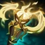
Đắt hơn 400g so với 2 món thần thoại còn lại. Tuy nhiên, không cung cấp thêm bao nhiêu chỉ số, và nội tại cũng kém hấp dẫn hơn. Không bao giờ mua.
Legendary items / Đồ huyền thoại
Lư hương sôi sục 13.12
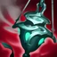
Do các món đồ thần thoại dành cho enchanter đều quá yếu, nên trong trường hợp không có món thần thoại nào để lên, nhiều người lựa chọn rush thẳng item này (hoặc Trượng Lưu Thủy). Từ 13.10, cả 2 item cho 5% ms, nên nếu lựa chọn rush, bạn có thể bỏ qua giày 2 và ưu tiên lên các item khác.
Nếu đã có món đầu tiên rồi, hãy cân nhắc kỹ lưỡng trước khi lựa chọn Lư hương sôi sục. Nếu team đối phương không có tank, chống chịu không quá nhiều, hãy lên các món đồ mang tính bảo kê như Lời thề hiệp ước, Dây chuyền chuộc tội, Hòm bảo hộ Mikael,... Chỉ nên mua Lư hương để hỗ trợ dmg cho carry, khi team có ít dmg hoặc khi team đối phương chống chịu tốt.
Trượng lưu thủy 13.12
Khá giống với Lư hương sôi sục. Cần lưu ý là có rất nhiều vị tướng gây dmg AD nhưng có tỉ lệ AP trong bộ kỹ năng. Nắm được điều này có thể lựa chọn tốt hơn giữa Lư hương và Trượng lưu thủy.
Hòm bảo hộ Mikael 13.12
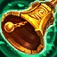
Không có gì nhiều để nói. Mua khi team cần thêm 1 khăn giải thuật.
Bình thải hóa dược 13.12

Không bao giờ mua.
Trát lệnh đế vương 13.12
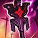
Phù hợp cho các tướng poke hơn là enchanter. Ví dụ: Lux, Zyra, Vel'koz. Nếu bạn chơi enchanter, hãy ưu tiên Lư hương hoặc Trượng lưu thủy trước.
Dây chuyền chuộc tội 13.12

Hồi rất nhiều máu, thích hợp khi đội hình bạn hoặc đội hình địch tầm đánh ngắn, do các tướng thường cụm lại 1 chỗ.
Lời thề hiệp ước 13.12
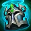
Vừa bảo hộ cho đồng đội, vừa tăng thêm chống chịu cho bản thân bằng HP và giáp. Với những ưu điểm này, thật khó hiểu khi gần như không bao giờ thấy ai lên item này cả.
Nhiều người biết lên item này dành cho AD carry. Thứ ít người biết là bạn còn có thể bấm cho các tướng đấu sĩ như Udyr, Hecarim, Camille,... Những tướng này hưởng lợi rất nhiều từ chống chịu miễn phí, và lượng sát thương của chúng đủ cao để hồi phục rất nhiều máu cho bạn.
Mặt nạ vực thẳm 13.12
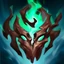
Cho quá nhiều kháng phép với giá 2400g. Chỉ cần cả 2 team có AP là bạn đã có thể mua món đồ này.
Găng xích thù hận 13.12

Tốt khi đối đầu với đội hình bảo vệ cho 1 carry duy nhất. Ngoài trường hợp này ra thì tốt hơn hết là bạn nên ưu tiên các món khác.
Tim băng 13.12

Không còn lỗi như hồi nửa đầu mùa 12. Món này mạnh khi team đối phương có nhiều tướng phụ thuộc vào tốc độ đánh.
Giáp gai 13.12

Nếu cần vết thương sâu, hãy dừng lại ở Áo choàng gai. Không bao giờ nâng cấp lên Giáp gai trừ khi đối phương có quá nhiều tướng phụ thuộc vào đánh thường. Và nếu ngay cả khi tình huống như vậy diễn ra, bạn vẫn nên lên Tim băng.
Tụ bão Zeke 13.12
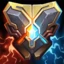
Có những trường hợp khá tốt để lên món này, nhưng cực kỳ hiếm. Mình thường hình dung item này như Lư hương dành cho các tướng tank. Mua khi cần thêm dmg.
Đá tỏa sáng 13.12
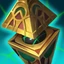
Không bao giờ mua.